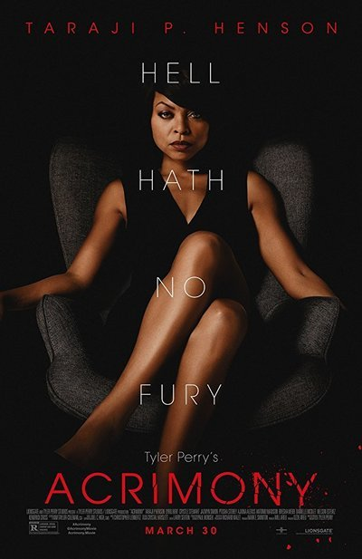

ACRIMONY
Title: Acrimony
Actors: Melinda, Robert, Crystle.
Age restrictions: PG-18
“Acrimony” is a story about bitterness and anger, with a dictionary definition of the title filling the screen to set the mood. After a brief and stilted court scene, Melinda (Henson) is smoking and talking to the camera where an unseen psychiatrist should be sitting. She recounts her story in voiceover, of the man (Lyriq Bent) who took her love, money and mother’s home from her for his pet science project. Just when they were at their lowest point, his luck changes, and suddenly Melinda can’t let go of the past. Her rage consumes her little-by-little. And as messy as Melinda’s story is, it makes a lot more sense than some of the visual aspects of “Acrimony. ” The movie looks like it was coated with a purple filter, which washed out a number of scenes. The projector in my screening had the dreaded 3D lens still on, so the movie looked even dimmer than Perry intended. Image result for ABOUT acrimony The moral of “Acrimony” seems to be: Leave a bad man, especially one who cheated on you before marriage and leeches off your financial resources — unless he has poured his life into the dream of inventing a self-recharging battery, in which case the bonds of matrimony are sacrosanct and no sacrifice is too great.
